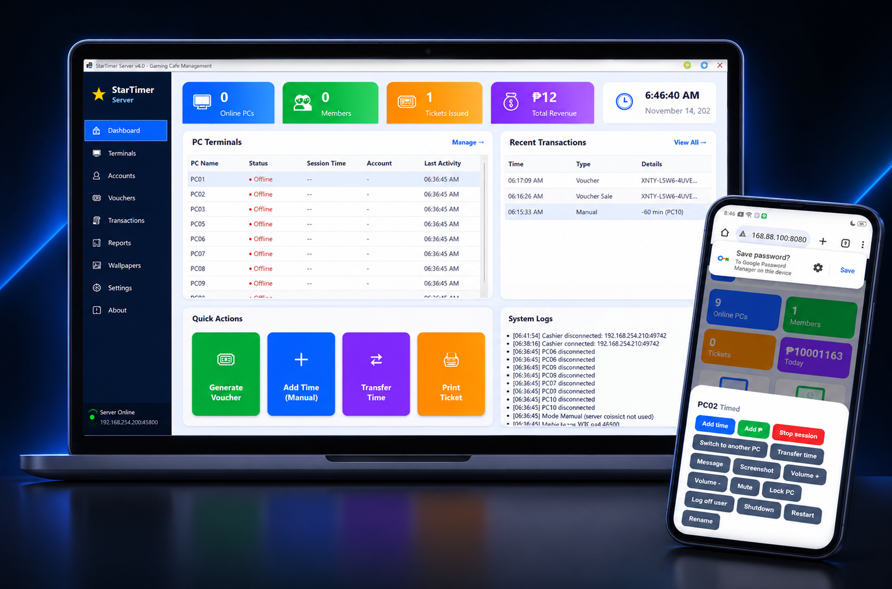
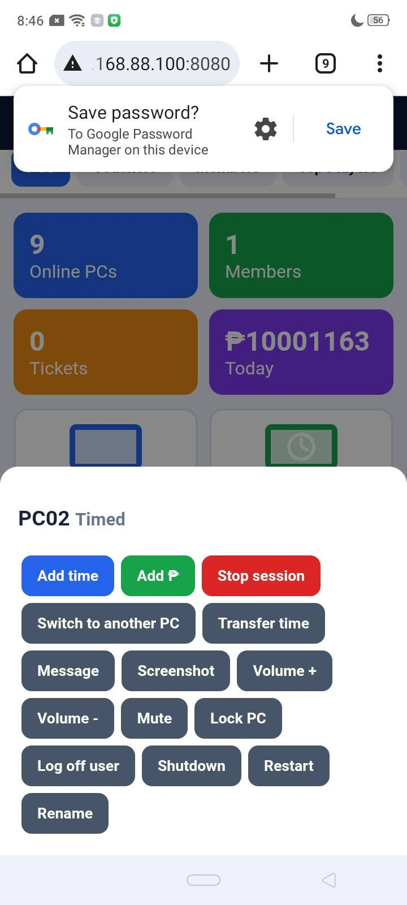
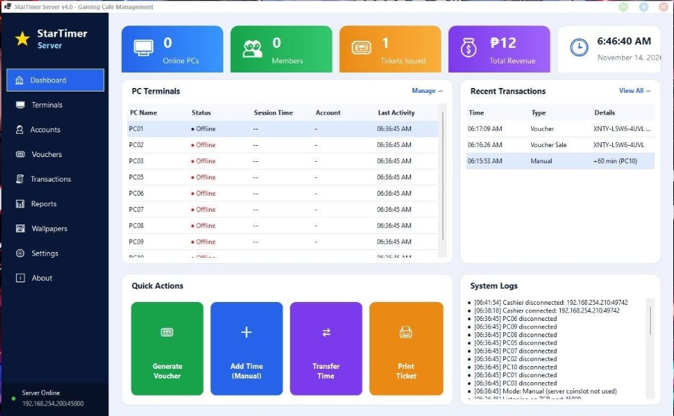
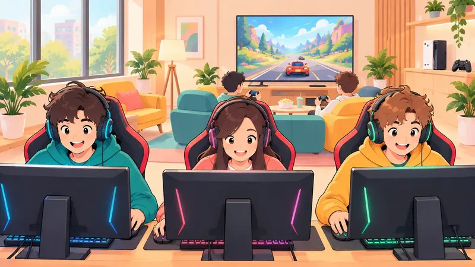

Flexible coinslot support
Connect coinslots through COM ports. Use an individual coinslot per PC or a centralized coinslot setup.
01 / HARDWAREA simple, powerful way to manage your Internet Cafe or Pisonet — from PC sessions and coinslots to vouchers and remote control.

Everything you need to run your cafe smoothly, organized in one management system.
Connect coinslots through COM ports. Use an individual coinslot per PC or a centralized coinslot setup.
01 / HARDWAREManage your terminals like familiar cafe billing software. Add time, remove time, transfer sessions and monitor PC status.
02 / SESSIONSUse the web interface on an authorized phone or device to add or remove time without going to the server.
03 / REMOTE ACCESSCreate and sell voucher tickets for customers who want prepaid access. Keep voucher activity in your workflow.
04 / VOUCHERSGuest time can be saved and remembered after an unexpected power loss, helping protect active sessions.
05 / RECOVERYBring your Internet Cafe or Pisonet operations together with a straightforward management experience.
06 / MANAGEMENTWhen StarTimer is set up as a standalone server without local peripherals, an admin can access the web interface from another authorized device on the network.

Keep an eye on your terminals at the server, and manage sessions from a mobile browser.


Whether you operate a neighborhood Pisonet or a gaming cafe, StarTimer helps keep session billing and daily management organized.
Get StarTimer free ↗Download StarTimer and bring your Internet Cafe or Pisonet management into one place.
Download StarTimer ↓ Free Internet Cafe and Pisonet Billing Management Software